По видео Сони и созвону команды 30.10: копия интерфейса Авито (их шрифт, иконки, цвета и кнопки), лента цепляет, как Instagram и X, темы устроены как сообщества Reddit, и всё понятно даже 60-летнему. Итоговый вариант: 7 досок, 22 экрана, главный сценарий - «зимние кроссовки до 5 000». Экраны листаются вбок, нажмите на экран, чтобы рассмотреть.
Итоговый вариант по всем пунктам из видео. Все 10 видов ленты и другие места для Сигнала - в конце страницы, если захочется сравнить.
Посты как в Instagram и X, собранные из деталей Авито: автор, вопрос, лучший ответ знатока, фото вещи с названием и ценой, счётчики «14 ответов», «Полезно 23», «Близким». Сверху «Мои вопросы» и «Мои темы»: темы как сообщества в Reddit, с кнопкой «Подписаться». Кнопка «Задать вопрос» всегда в углу
Лента должна цеплять, как соцсети, и быть понятной 60-летнему. Польза видна без клика, обсуждение ведёт к объявлению (23:30)
К экранам →Вкладка «Советы» на месте Избранного. Избранное: кнопка «Избранное» рядом с поиском и карточка в Профиле
Слово «Советы» само объясняет, что внутри. Объявления и Сообщения на своих местах (11:41), Избранное в одно касание
К экранам →Переписка в Сообщениях, близкие закреплены сверху. В Советах карточка «Аня просит совета» с кнопкой «Помочь Ане». Присланное оцениваем кнопками «Нравится» и «Не то»
Одно место для чатов (14:47-15:20). Кнопку со словом поймёт любой, кружок и свайп - не каждый
К экранам →До 10 отзывов о модели одна цитата, от 10 короткая сводка Ави: плюсы и минусы обычными словами. После покупки владельцы помогают разобраться с вещью (экран 4)
Сводка по 2-3 отзывам ненадёжна, Яндекс тоже включает ИИ-сводку от 10 отзывов. Помощь после покупки - раздел 5 в тексте Сони и гипотезы 1-2 в дереве Дианы: повод вернуться в Авито между сделками
К экранам →На каждом экране человек пишет, что его беспокоит, и видно, чем всё закончилось.
Интерфейс собран из настоящего Авито: шрифт Avito Sans, иконки и цвета дизайн-системы. Лента устроена как в соцсетях: каждый вопрос - пост с автором, лучшим ответом знатока и крупным фото вещи из ответа, внизу счётчики со словами «14 ответов», «Полезно 23», «Близким». В каждом посте видно, что беспокоит человека и чем всё закончилось. Кнопка «Задать вопрос» всегда в углу экрана. Темы устроены как сообщества в Reddit: подписка одной кнопкой «Подписаться», и вопросы этих тем попадают в ленту. Варианты ленты, которые рассматривали, в конце страницы.
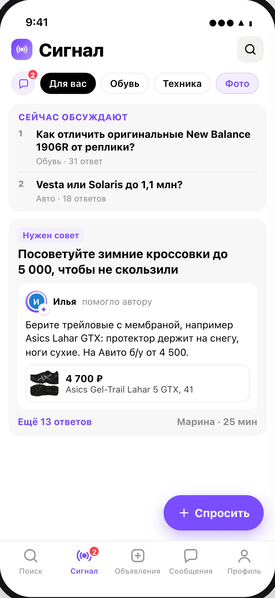
Вопрос выглядит как пост в соцсети: автор, боль («дважды падала у метро»), лучший ответ знатока и фото вещи с названием и ценой, как в выдаче Авито. Под ответом итог: «Заказала, спасибо!». Внизу счётчики со словами, кнопка «Задать вопрос» всегда в углу экрана, вверху кнопка «Мои темы».
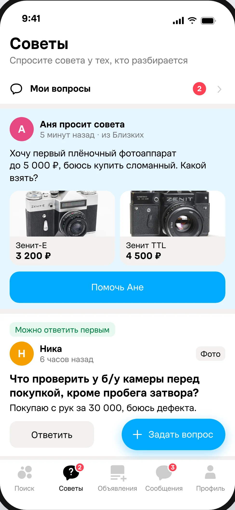
Аня боится купить сломанный фотоаппарат и присылает два варианта с фото, как опрос в соцсети. Помочь можно одной кнопкой «Помочь Ане». Ниже вопрос вашей темы без ответа с пометкой «Можно ответить первым»: Ника боится камеры с дефектом.
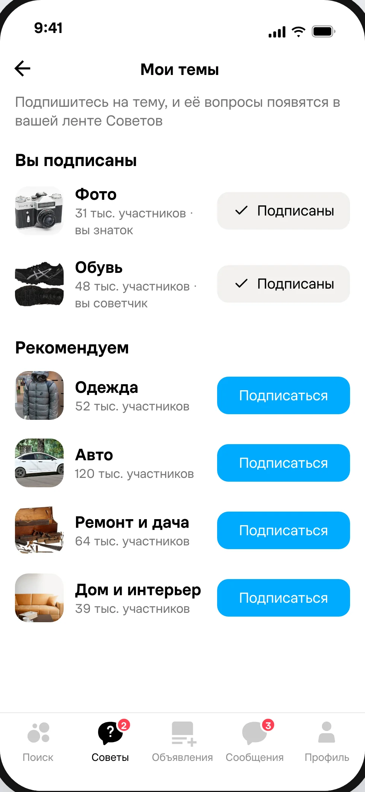
Темы работают как сообщества в Reddit: подписываетесь кнопкой «Подписаться», и вопросы темы появляются в ленте. Видно, где вы знаток или советчик. Экран открывается кнопкой «Мои темы» вверху ленты.
Пять вкладок, как в Авито сейчас: «Советы» встают на место Избранного, Объявления и Сообщения остаются на своих местах. Избранное не теряется: кнопка «Избранное» рядом с поиском и карточка в Профиле с пометкой «Теперь здесь». Главная, плитки категорий и профиль - как в Авито.
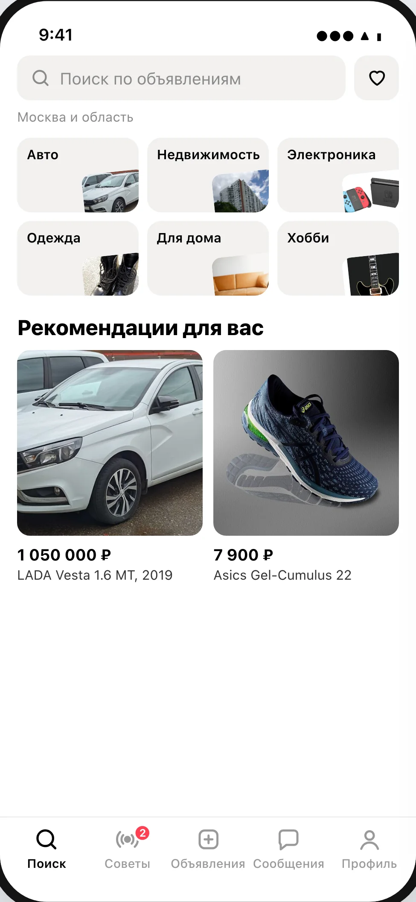
Главная Авито как есть, добавлена только кнопка «Избранное» рядом с поиском. В нижней панели пять вкладок: Поиск, Советы, Объявления, Сообщения, Профиль.
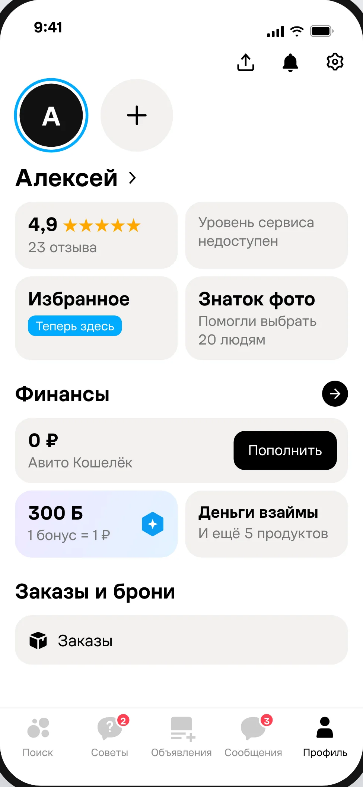
Профиль Авито как есть, добавлены только две карточки в том же стиле: «Избранное» с пометкой «Теперь здесь» и «Знаток» с главным итогом: помогли выбрать 20 людям. 300 бонусов в Финансах начислены за покупки по вашим советам.
Одно поле, как письмо другу, и кнопка «Сказать голосом». Категорию, бюджет и размер понимает Ави, помощник Авито, и показывает одной строкой. Кому показать вопрос - два варианта словами. После отправки сразу понятно, что вопрос ушёл и что будет дальше. Пример - ваш собственный вопрос: пуховик, в котором не мёрзнешь на остановке.
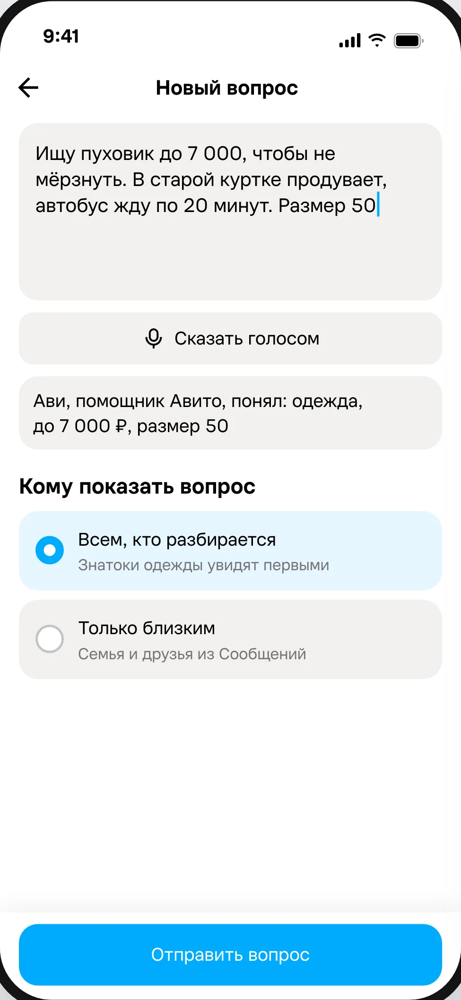
Пишете как в мессенджере или говорите голосом. Ави сам понимает категорию, бюджет и размер. Кому показать - два понятных варианта, выбираются до отправки.
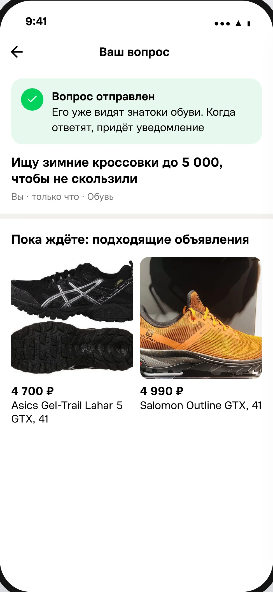
Зелёная плашка «Вопрос отправлен» и что будет дальше. Ниже объявления, которые подобрал Ави, и похожие вопросы. Экран не пустой, понятно, что делать, пока ждёте ответ.
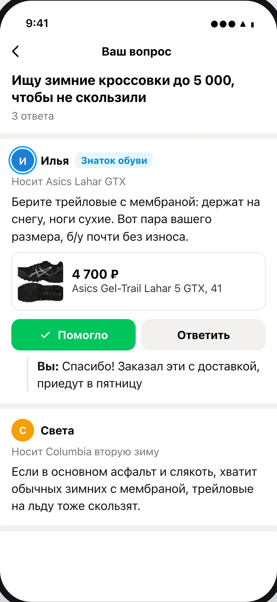
Проблема решилась прямо здесь: знаток одежды Света прислала пуховик вашего размера, вы нажали «Помогло» и пишете «Заказал с Авито Доставкой». У каждого ответа одинаковые кнопки «Помогло» и «Ответить».
Ответы выглядят как обычные комментарии: сверху тот, что помог автору, под ним ответы на него. Читатели отмечают ответы кнопкой «Полезно», как голосами в Reddit, и полезные поднимаются выше. У каждого действия есть подпись: «Отправить близким», «Написать ответ», «Добавить объявление». Объявление к ответу прикрепляется кнопкой со словами, а не значком «+». Пример - вопрос Марины через 10 минут после публикации, пока она ещё выбирает: вы советуете из своего опыта.
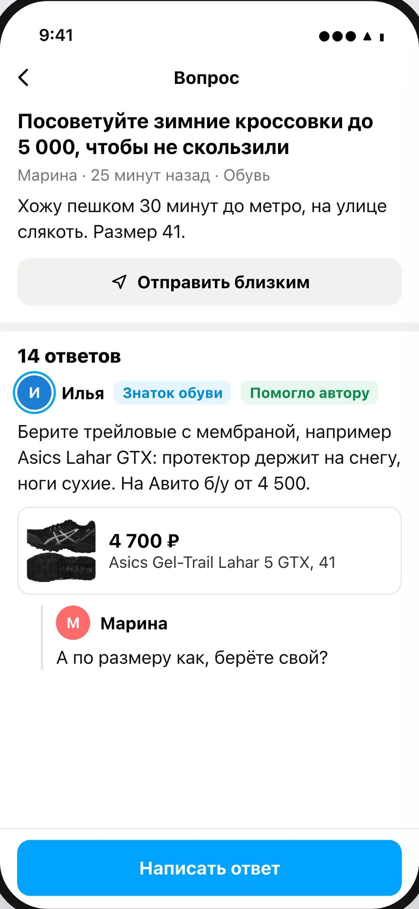
Марина боится снова упасть. Илья советует модель с объявлением, а сомнение про размер закрывает прямо в ветке: «Свой, с тёплым носком как раз». Его ответ сверху с пометкой «помогло автору», читатели отметили его «Полезно 9». Остальные 12 ответов открываются кнопкой, свой можно добавить кнопкой «Написать ответ».
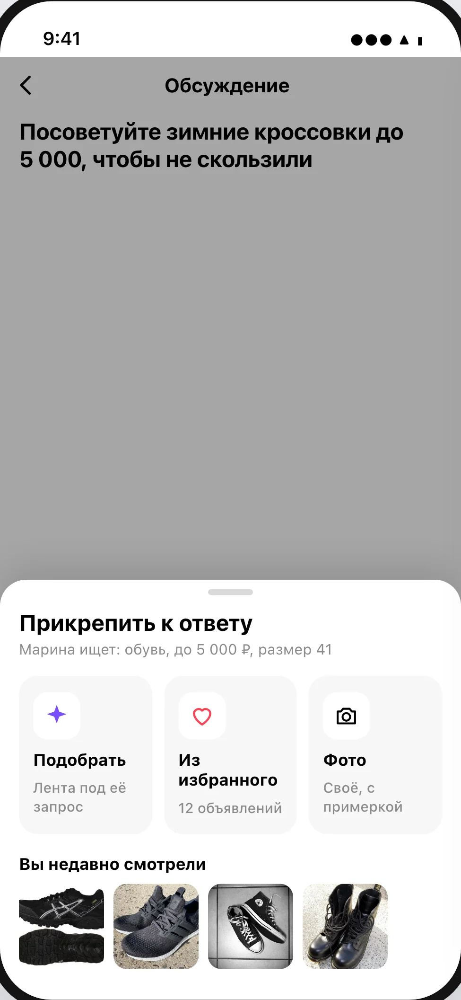
Нажали «Добавить объявление». Вместо значка «+» кнопка со словами и три понятных способа: подобрать по вопросу, взять из Избранного или сфотографировать свои кроссовки. Шторка закрывается кнопкой «Закрыть».
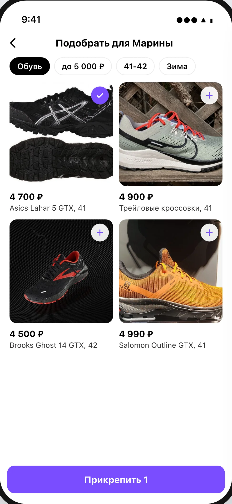
Объявления уже отобраны по вопросу Марины. Под каждым кнопка «Выбрать», выбранное отмечено галочкой, а то, что уже посоветовал Илья, помечено «Уже у Ильи». Так ответ сразу ведёт к покупке.
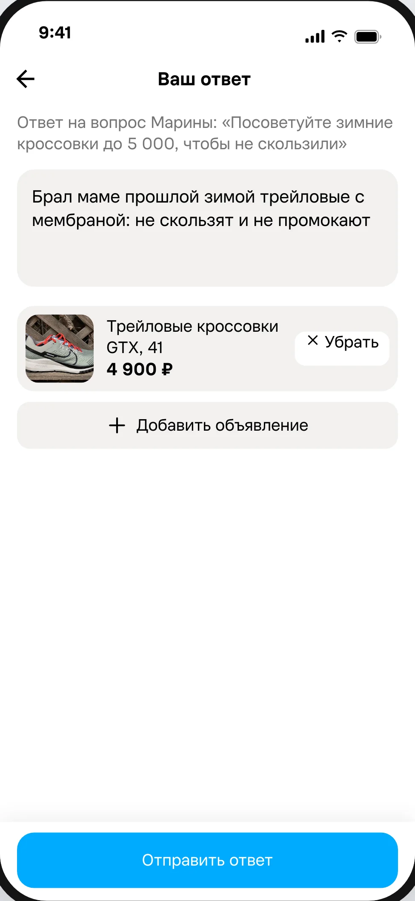
Текст и прикреплённое объявление уходят одним ответом. Если прикрепить своё объявление, ответ получит пометку «Реклама».
Групповых чатов с незнакомыми нет: только семья и друзья, которых вы позвали сами, а темы по интересам - в ленте Советов. Переписка живёт в обычных Сообщениях Авито, близкие закреплены сверху. В Советах просьба близкого приходит карточкой с кнопкой «Помочь». Что прислал папа, оцениваем кнопками «Нравится» и «Не то», без свайпов.
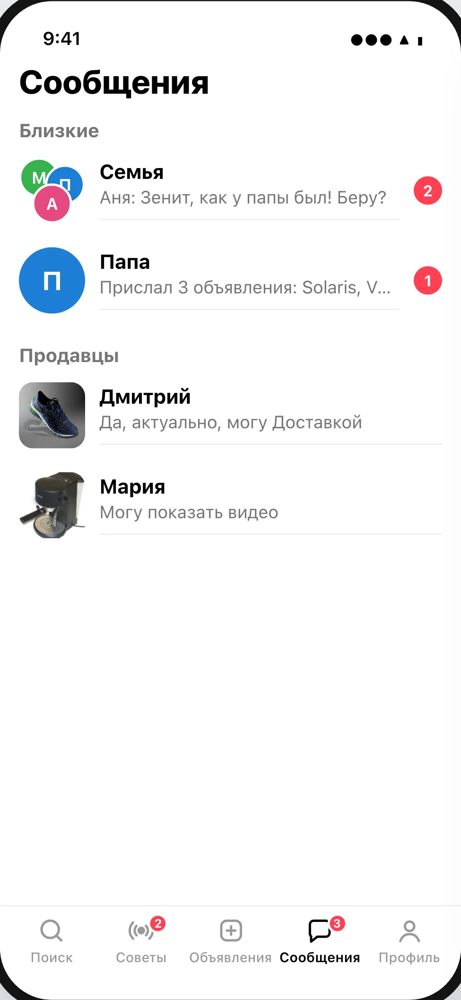
Поверх Советов открылся семейный чат, тот же, что в Сообщениях. Аня боится купить сломанный, мама одобрила Зенит, вы советуете попросить видео затвора. Шторка закрывается кнопкой «Закрыть».
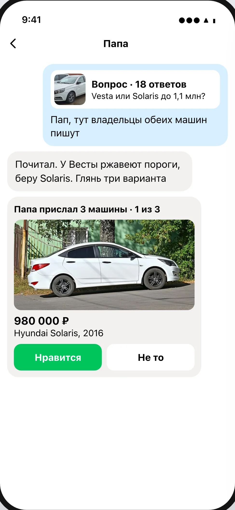
Через час в Сообщениях: близкие закреплены сверху и отделены от продавцов. Аня пишет «Беру! Видео пришло» - продавец прислал видео затвора, её проблема решена. Папа прислал три машины.
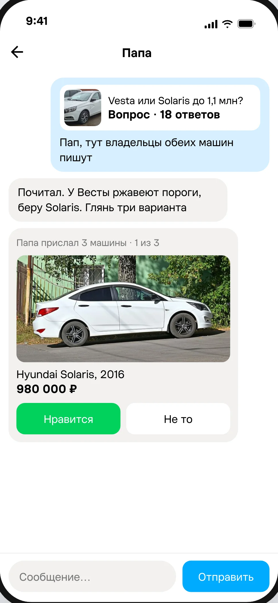
Папа боялся взять машину, которая сгниёт. Прочитал ответы владельцев и решил сам: у Весты ржавеют пороги, берёт Solaris. Его варианты оцениваем по одному кнопками «Нравится» и «Не то», без свайпов.
Карточка объявления Авито как есть: фото со счётчиком, цена, кнопки внизу. Добавлен только спокойный серый блок «Что говорят владельцы»: до 10 отзывов о модели одна цитата, от 10 - короткая сводка Ави с плюсами и минусами (Яндекс тоже включает ИИ-сводку от 10 отзывов). Ниже вопрос об этой модели с лучшим ответом и кнопка «Задать вопрос о модели». После покупки владельцы помогают разобраться с вещью: к вопросу прикреплена купленная модель с пометкой «Куплено на Авито».
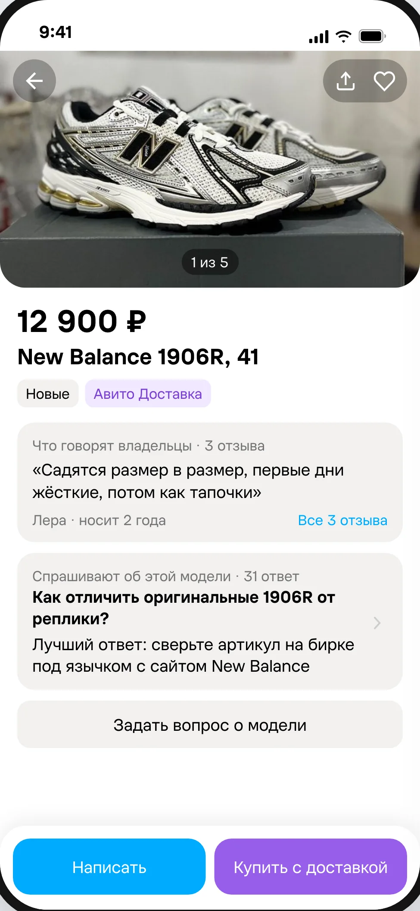
Два главных страха закрыты прямо в карточке. «А вдруг не подойдёт размер» - владельцы: «садятся размер в размер». «А вдруг подделка» - лучший ответ: сверить артикул с сайтом. Блок спокойный и не спорит с ценой и кнопками покупки.
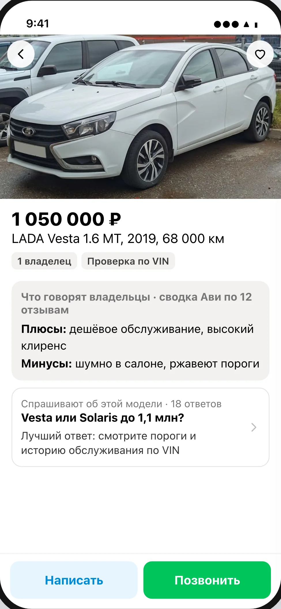
Плюсы и минусы модели по отзывам владельцев коротко, обычными словами. Так Яндекс показывает сводку отзывов в Маркете, от 10 отзывов. Работает и для авто, и для техники.
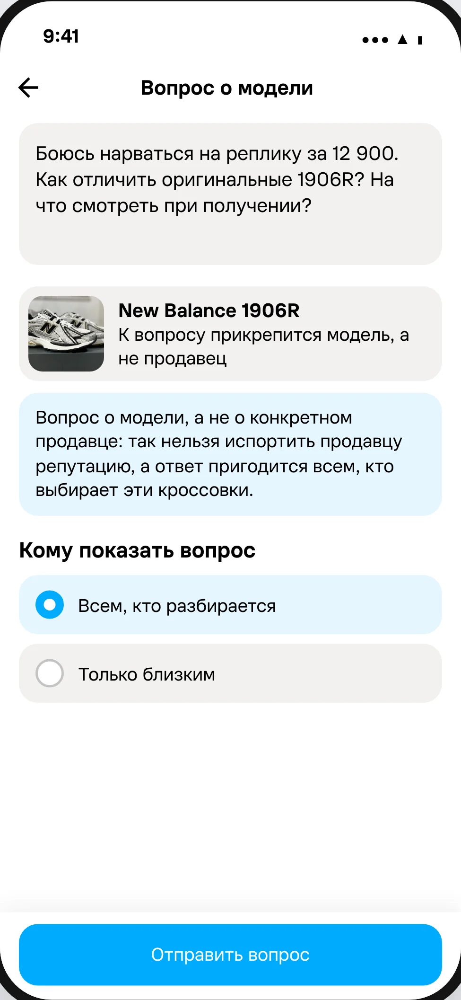
Вопрос о модели задаётся в один шаг, модель уже прикреплена. Если такой вопрос уже задавали, Авито сразу показывает готовые ответы. Про конкретного продавца написать нельзя, его репутация не страдает.
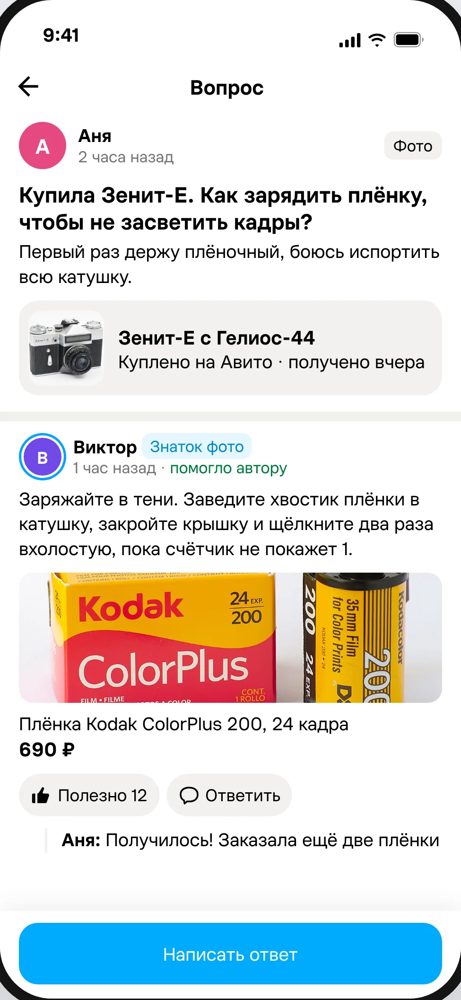
Аня купила Зенит-Е и боится засветить плёнку. К вопросу прикреплена купленная модель с пометкой «Куплено на Авито». Знаток фото Виктор объяснил по шагам и прикрепил плёнку, Аня: «Получилось! Заказала ещё две плёнки». Авито нужен и после сделки, а одна покупка тянет за собой следующую.
Вкладка «Знаток» внутри обычного профиля Авито, туда ведёт карточка «Знаток» в Профиле. Статус свой в каждой теме и растёт только от отметок «Помогло» и покупок по совету, а не от числа ответов. В ленте рядом с именем видно только слово, например «Знаток обуви», и тонкое кольцо у аватара. Уровни и прогресс живут в профиле.
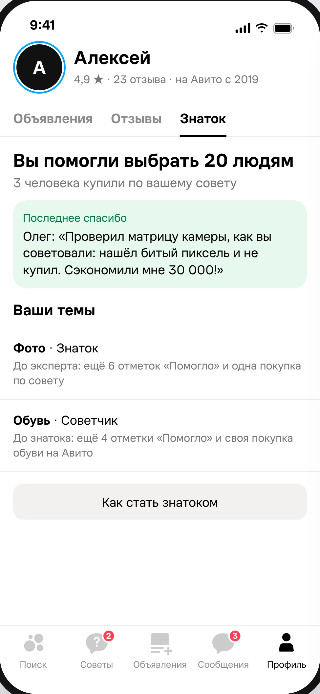
Профиль не переделываем, добавляем вкладку рядом с Объявлениями и Отзывами. Главное одной фразой: «Вы помогли выбрать 20 людям», и последнее спасибо: Олег не купил камеру с битым пикселем. Знаток видит, что его совет реально уберёг человека.
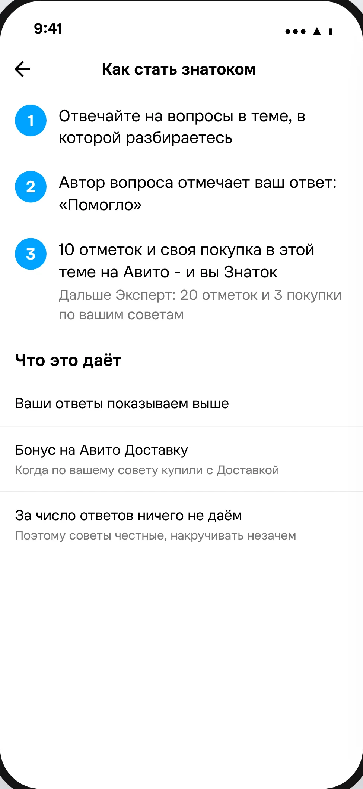
Три шага с номерами вместо таблицы уровней: советчик, знаток, эксперт. Считаем только «Помогло» от автора вопроса и покупки по совету.
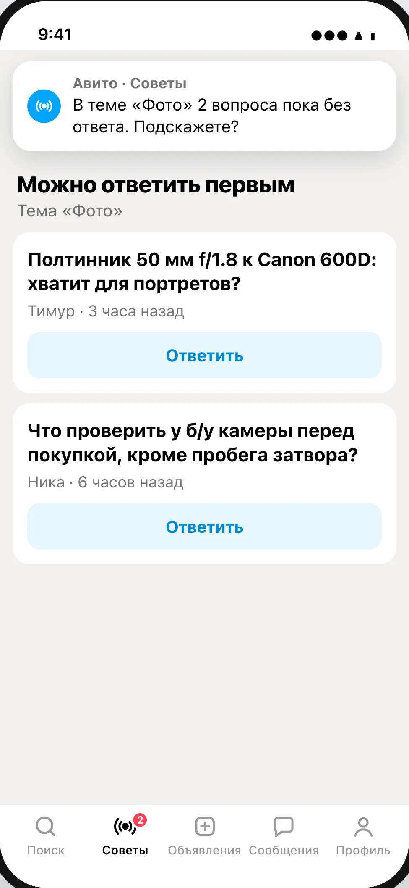
Вопрос без ответа через 3 часа поднимается в ленте темы, через 6 часов уходит мягким уведомлением трём знатокам темы, не больше одного в день. Под вопросом одна кнопка «Ответить».
Оставили для сравнения: если захочется другую подачу ленты или другое место для Сигнала, всё здесь.
Все варианты по заданию Сони. В итог взяли 3 «Вопрос и лучший ответ» и добавили сверху блок «Сейчас обсуждают» из 5. Остальные оставили для сравнения: везде крупный заголовок, нет «горит», мягкие метки, кружок «Мои запросы» и кнопка «Спросить» внизу.
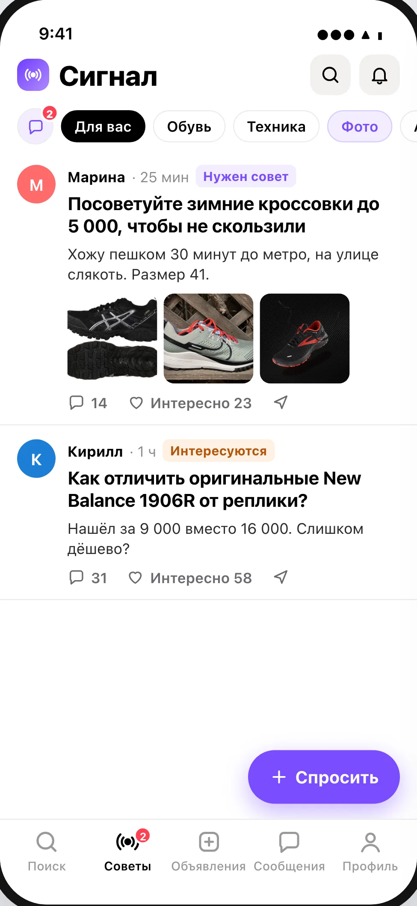
Как обсуждения в Threads: аватар, заголовок, фото вещей, ответы и «интересно». Читается быстрее всего. Фото есть не у каждого вопроса.
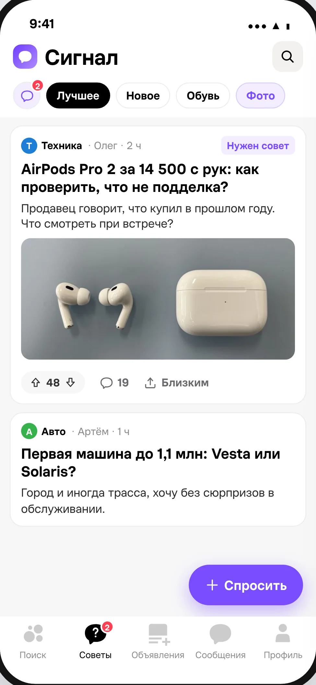
Как на Reddit: тема, крупная обложка, голоса «полезно». Лучшее поднимается само. Помещается 1-2 вопроса на экран.
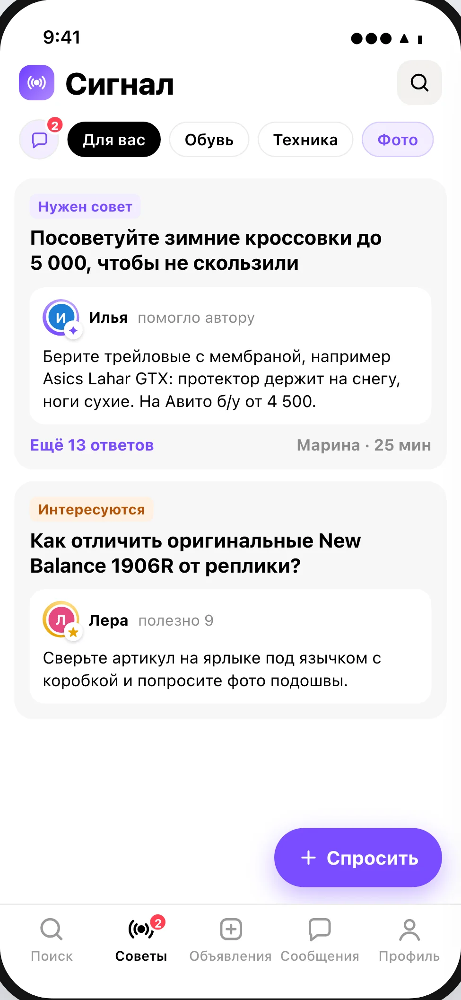
Под заголовком сразу ответ знатока. Польза видна без клика, знатоки на виду. Длиннее карточки, меньше вопросов на экране.
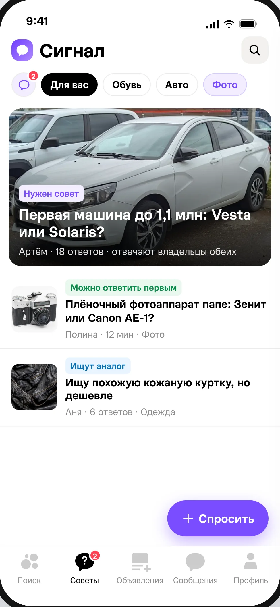
Самое интересное крупно, остальное компактно. Цепляет с первого экрана. Нужен хороший алгоритм для обложки.
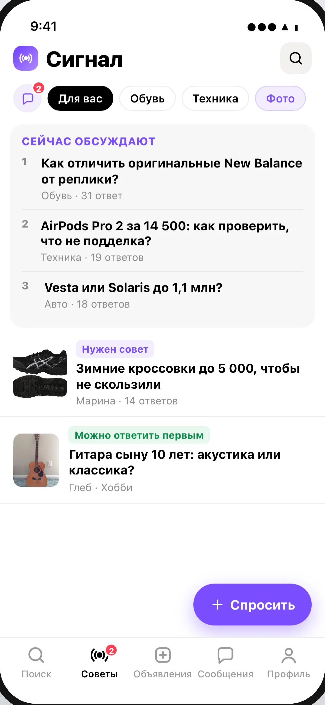
Как тренды в X: сверху короткий топ, ниже лента. Видно, о чём говорят прямо сейчас. Топ похож на старое «горит», нужен мягкий тон.
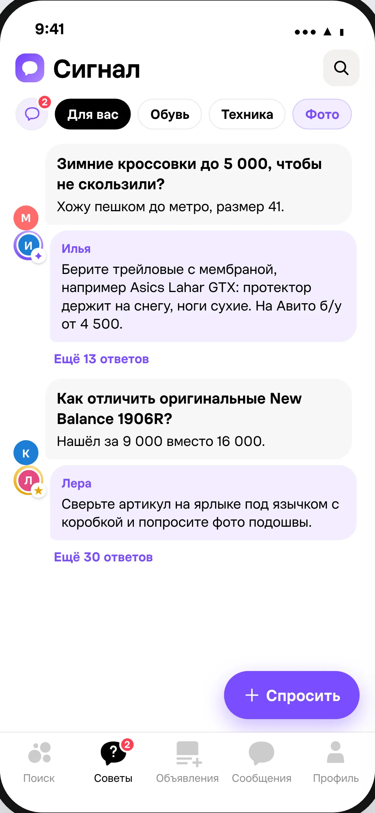
Вопрос и лучший ответ пузырями, как в мессенджере. Знакомо, ощущается живым разговором. Легко спутать с чатами в «Сообщениях».
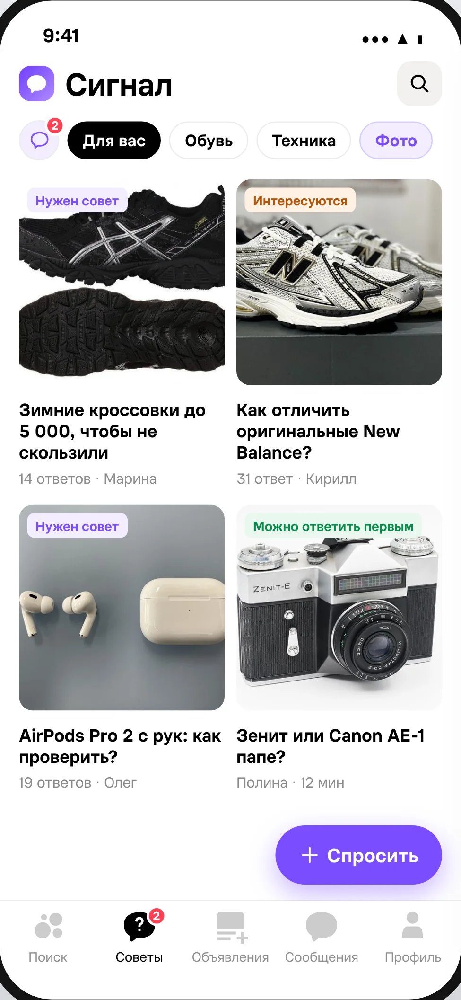
Обсуждения выглядят как рекомендации Авито. Самый «родной» для Авито вид. Мало текста, вопрос надо открыть, чтобы понять.
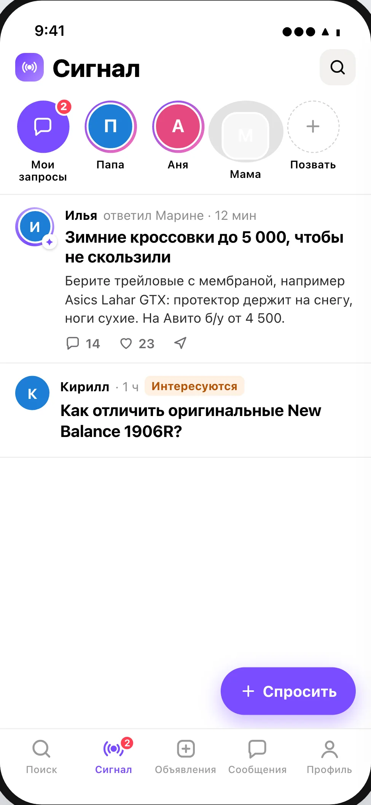
Сверху «Мои запросы» и близкие, как сторис, ниже лента. Свои ответы и близкие в один тап. Без близких ряд пустой, нужен «Позвать».
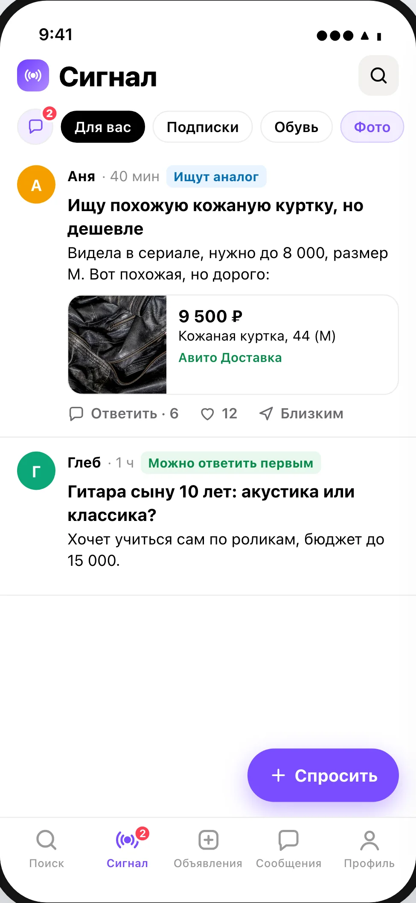
Вопрос сразу с карточкой вещи, как пост с вложением. Прямой путь к покупке, растут контакты. Плотнее по визуалу.
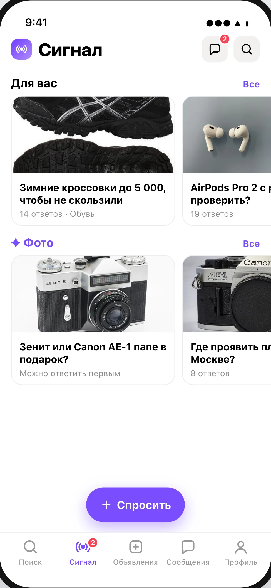
Горизонтальные полки: для вас, ваша тема, остальные. Знаток сразу видит свою категорию. Меньше «залипания», больше выбора.
Не вошли в итог: внутри Поиска Сигнал легко не заметить, а вкладки внутри Сообщений спорят с перепиской с продавцами, главным в Авито.
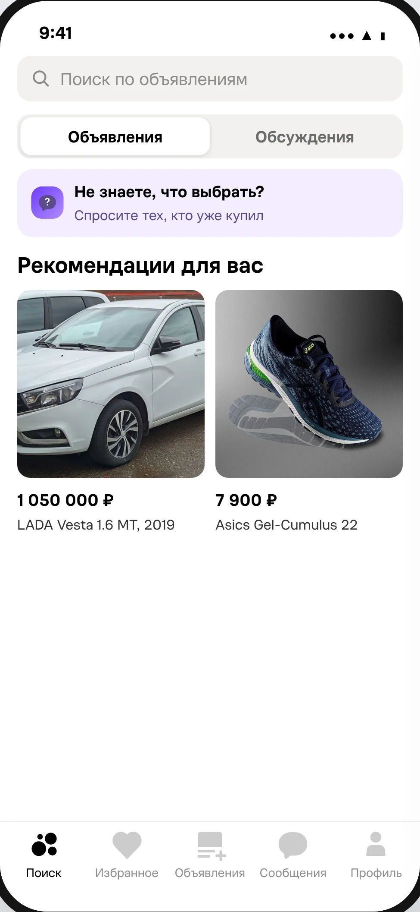
Нижняя панель как сейчас, на главной переключатель «Объявления / Обсуждения». Ноль новых вкладок, люди и так начинают с поиска. Сигнал легко не заметить, меньше заходов.
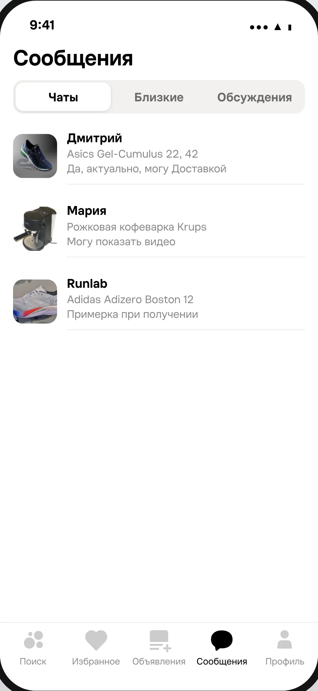
Вкладки «Чаты / Близкие / Обсуждения». Общение с близкими рядом с чатами, где оно и так идёт. Конкурирует с перепиской с продавцами, это главное в Авито.